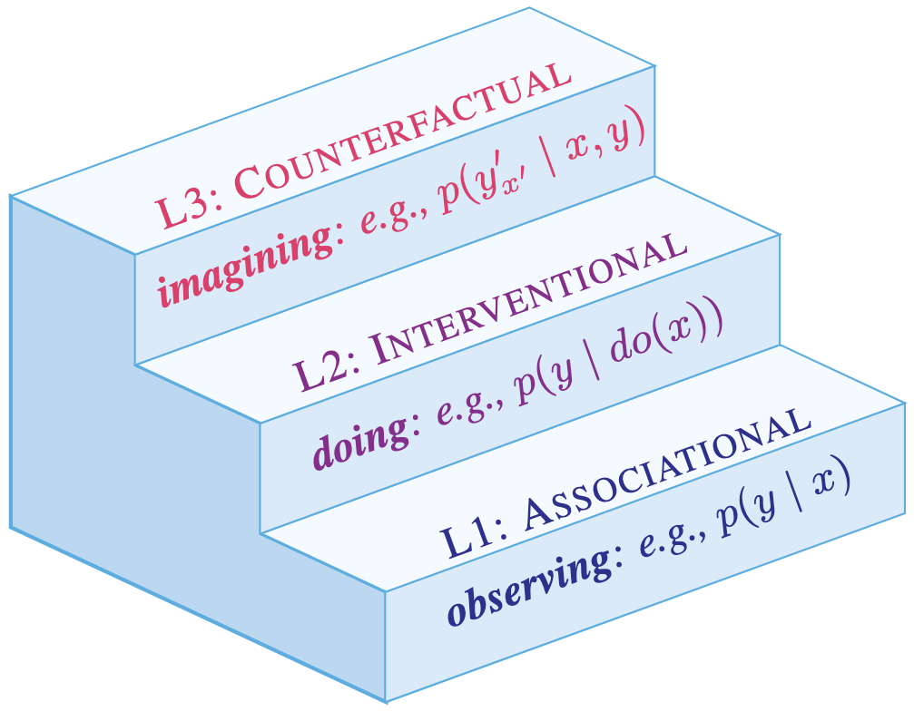
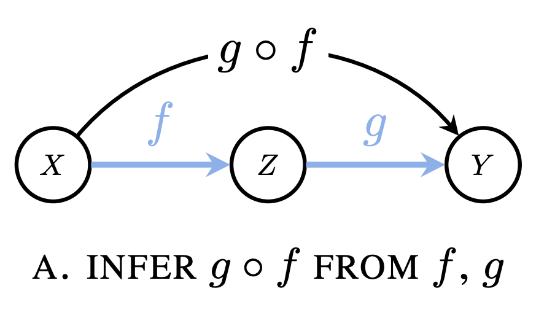
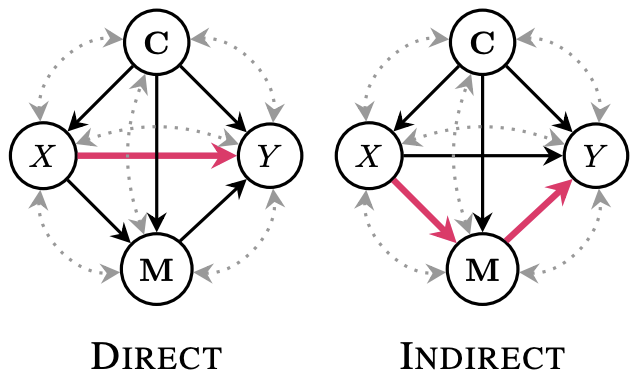

JACQUELINE R. M. A. MAASCH

|
Bio. I am a fifth-year PhD candidate in computer science at Cornell Tech and the Weill Cornell Medicine Institute of AI for Digital Health. My doctoral research has been supported by the NSF Graduate Research Fellowship, Cornell's Presidential Life Science Fellowship, and the Digital Life Initiative. I am advised by Dr. Fei Wang, Dr. Volodymyr Kuleshov, and Dr. Kyra Gan. Previously, I was a research intern at Microsoft Research Cambridge. For the spring of 2026, I will be a resident at the Isaac Newton Institute for Mathematical Sciences at the University of Cambridge. |
A subset of my lead-author papers are highlighted below. My full bibliography is on Google Scholar.
|  |
CausalARC: Abstract Reasoning with Causal World Models. J Maasch, J Kalantari, K Khezeli. NeurIPS LAW 2025 ⚡︎ Spotlight. |
|  |
Compositional Causal Reasoning Evaluation in Language Models. J Maasch, A Hüyük, X Xu, A Nori, J González. ICML 2025. |

|
Position: Beyond Reasoning Zombies — AI Reasoning Requires Process Validity. R Lawrence*, J Maasch*. *Equal contribution. |

|
Probabilistic Graphical Models: A Concise Tutorial. J Maasch, W Neiswanger, S Ermon, V Kuleshov. |
|  |
Local Causal Discovery for Structural Evidence of Direct Discrimination. J Maasch, K Gan, V Chen, A Orfanoudaki, N Akpinar, F Wang. AAAI 2025. |

|
Local Discovery by Partitioning: Polynomial-Time Causal Discovery Around Exposure-Outcome Pairs. J Maasch, W Pan, S Gupta, V Kuleshov, K Gan, F Wang. UAI 2024. |

|
Molecular de-extinction of ancient antimicrobial peptides enabled by machine learning. J Maasch*, M Torres*, M Melo, C de la Fuente. Cell HOST & MICROBE 2023. *Equal contribution. |

|
Preferred contact. In general, I can be reached through LinkedIn.
|